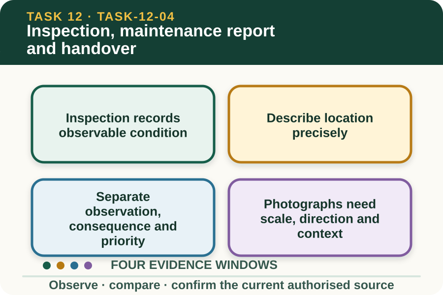

Learning purpose
Record condition, defects, completed work, remaining issues and the next authorised action.
Task 12 · Lesson 4 of 4
Record condition, defects, completed work, remaining issues and the next authorised action.
Learning purpose
Record condition, defects, completed work, remaining issues and the next authorised action.
Success criteria
Learning boundary
Supplementary learning and formative practice only. Current RTO assessment, local procedures and authorised supervision control real work.

An inspection compares visible condition and documented status with the current purpose and specification. It may identify missing, displaced, damaged, corroded, loose, obstructed or mismatched components without deciding how they will be repaired.
Use a safe authorised observation position and supplied evidence. The website does not direct entry, touching, loading, dismantling or practical diagnosis of a real fence.
A defect report needs a consistent location reference such as fictional segment, post reference, gate identifier or map zone. Phrases such as near the back are difficult for another person to verify.
Privacy-safe learning maps use fictional identifiers. Real boundary coordinates, neighbour details, current stock locations and secure access information always remain in the controlled workplace record.
The observation states what is visible, the possible consequence explains why it matters for fence purpose, and priority reflects the authorised workplace criteria. A learner should not convert appearance alone into a structural judgement.
If the condition could expose people, animals or property, report promptly and follow the current local direction. The supervisor controls restrictions, repair decisions and acceptance.
A useful fictional inspection set includes an overview that locates the segment and a closer image that shows the observable condition. A privacy-safe reference marker can support scale without demonstrating physical contact.
Record date, viewpoint and image identifier, and do not edit away surrounding context. A photograph supports the report but cannot prove hidden condition or complete fitness for purpose.
Fictional worked example
Observed evidence: On 21 August 2027, a fictional inspection image set shows Segment F-03 with one support leaning relative to the plan reference and a gate identifier that cannot be read. No close access or physical check is authorised. Decision and reason: Omar records two observable issues but does not diagnose structural cause or prescribe repair. Safe action: He marks F-03 for supervisor review, gives the image identifiers and notes that asset identity remains uncertain. Result: The supervisor applies the local access and inspection process and confirms the correct segment record. Next check or record: Omar updates the report with confirmed identity, current status and next authorised owner, leaving the repair field controlled.
A clear handover separates completed and checked work, work awaiting verification, unresolved defects, restricted areas, controlled resources and the next authorised action. It does not use finished as a shortcut for several different states.
The receiver repeats key identifiers and outstanding actions so responsibility is clear. Where the work remains open, the record names the decision owner and review time rather than implying acceptance.
Comparable reports can show recurring locations, conditions or environmental influences. A pattern can help the supervisor review design, inspection timing or work planning, but it does not establish cause without further evidence.
Record actual observations and authorised outcomes consistently. The learning exercise does not replace inspection by a competent authorised person or the formal RTO assessment process.
Formative practice
Each option explains the consequence. These answers save only on this device.
Written application
Apply and keep a learning record
Review supplied privacy-safe images and plan extract. Complete observation, source comparison, evidence-limit and handover fields. Do not propose a repair technique or enter a real fence area.
Learning record: A supplementary-learning condition report with traceable evidence and clear next ownership.
Lesson responses and the activity are formative learning only. Formal sufficiency and competence remain with the current RTO process.
Next: return to the task hub and follow the teacher-confirmed assessment direction.
Source basis: AHCINF206 Release 1 fault, maintenance, completion and reporting concepts. Current local access, inspection, repair, close-out and acceptance processes remain controlled by the authorised plan, teacher and workplace.